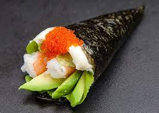
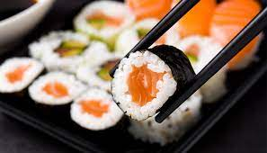
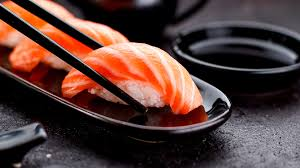
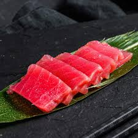

TEMAKI

Los temakis son unas piezas de sushi con forma de cono de alga nori rellenas de arroz y diferentes ingredientes. Temaki significa en japonés “hecho a mano” y procede de las palabras “te” que significa mano y “maki” cuyo significado es enrollar.
MAKI

En japonés, la palabra maki significa “rollo”. El maki sushi es por tanto un rollo de alga nori relleno de arroz y distintos ingredientes como pescado, marisco, frutas o verduras. Estos deliciosos rollitos son muy populares y permiten poner mucha imaginación a sus rellenos.
NIGIRI

El nigiri es un sushi compuesto por una bola de arroz que se moldea con la mano sobre la que se sirve un trozo de pescado crudo finamente fileteado u otros ingredientes como pulpo cocido, anguila o tortilla. A diferencia de otros tipos de sushi como el maki o el temaki, el nigiri no va envuelto en alga nori.
SASHIMI

El Sashimi es un plato que viene de Japón que se basa en pescados crudos y/o mariscos cortado de manera fina, pero no tanto como se corta el carpaccio sino algo más grueso. La palabra Sashimi en Japonés se refiere a “saborear un ingrediente por sí mismo”. Es decir, degustar ese plato por sí mismo y disfrutarlo.